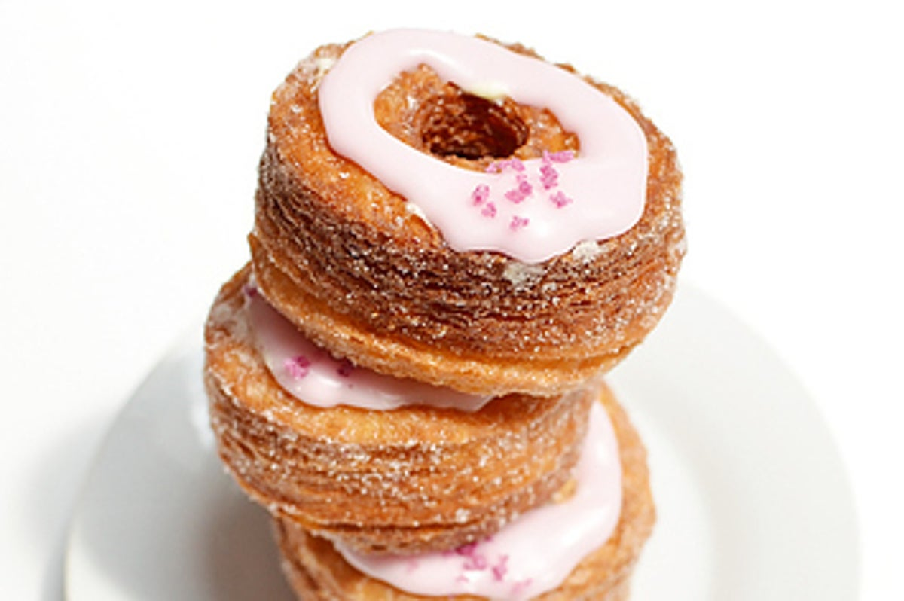

A croissant is a buttery, flaky, viennoiserie pastry of Austrian origin, named for its historical crescent shape. Croissants and other viennoiserie are made of a layered yeast-leavened dough.
🥐 They aren't really French Shocking, we know! These delicious pastries are said to have been invented in Vienna, Austria. Once upon a time in 1683 Vienna, Austria the Turkish tried to invade Vienna during a big battle siege over the city. Failing each time they decided to dig an underground tunnel, but Vienna’s bakers, who worked in the basement storerooms, heard the digging and alerted the army. The Turkish invaders didn’t succeed and the bakers of Vienna were given high honors for saving the city. Bakers made pastry in the shape of a crescent moon, that is the symbol of the Ottoman Empire (also known as the Turkish Empire), to celebrate this victory.
🥐 August Zang, an
Austrian artillery officer, is credited with bringing the croissant to
France when he opened his own Viennese bakery in Paris.
Some say it was
Marie Antoinette
who brought the croissant to France… The Queen of the French Revolution is
famously attributed for the phrase, “Let them eat cake”. But what she
really said, when told that the population was in revolt because they had
no bread, was, “Let them eat croissant”.
🥐 The first known modern-day French croissant recipe wasn’t created until the early 1900s.
🥐 The Croissant became the French national product in 1920 and started as a luxury product, but by the end of the nineteenth century, it was middle-class (the rich preferred a good brioche).
🥐 Before the modern croissant, puff pastry was used as a garnish or shell, not to eat on its own.
🥐 The chocolate croissant is actually called pain au chocolat, as it is not in the shape of a crescent.
🥐 Croissants are typically made by folding butter into dough, rolling the dough into sheets, and then continuing the folding and rolling process known as ‘laminating’, before cutting and rolling into a crescent shape and baking in an oven.
🥐 How many layers are there in a croissant? Different bakers make their croissants with a different number of folds and turns. But most fold their croissant dough into thirds at each turn before spreading it with a roller and folding it again into thirds for a total of 3 or 4 turns. So if a baker folds his dough 3 times each turn for a total of 3 turns, the resulting croissant dough will have 27 layers while 4 turns results in a croissant dough with 81 layers. After the laminating process, bakers cut the croissant dough into triangles and roll the dough into their famous crescent shape, increasing the number of layers in the croissant by two for each roll. Most recipes recommend 3 or 4 rolls. Laminated dough with 81 layers, rolled 4 times, will result in a croissant with 649 layers. Mind blowing, isn’t it?
🥐 There are only 8 ingredients in a French croissant recipe. The basic ingredients for a classic French croissant au beurre are: 1) butter, 2) flour, 3) water, 4) milk, 5) yeast, 6) sugar 7) salt and 8) egg.
🥐 Trademarked cronut
A cross between a croissant and a doughnut?
The cronut is a recent
culinary trend in the U.S., and has already been trademarked.

🥐 Yakitate!! “Yakitate!!” means, “freshly baked” in Japanese. And one of Japan’s most popular Manga characters has to bake a croissant with 324 layers of dough. Check this out 324-Layer Croissant Ja-pan
A croissant should be golden brown, crispy and flaky on the outside with visible layers. The interior should be soft and airy with honeycomb air pockets. It should taste rich and slightly buttery but should not be too greasy just as you will get them in our Cafe Brunch restaurants. Now there is only one thing waiting for you.. our delishh croissants to try!